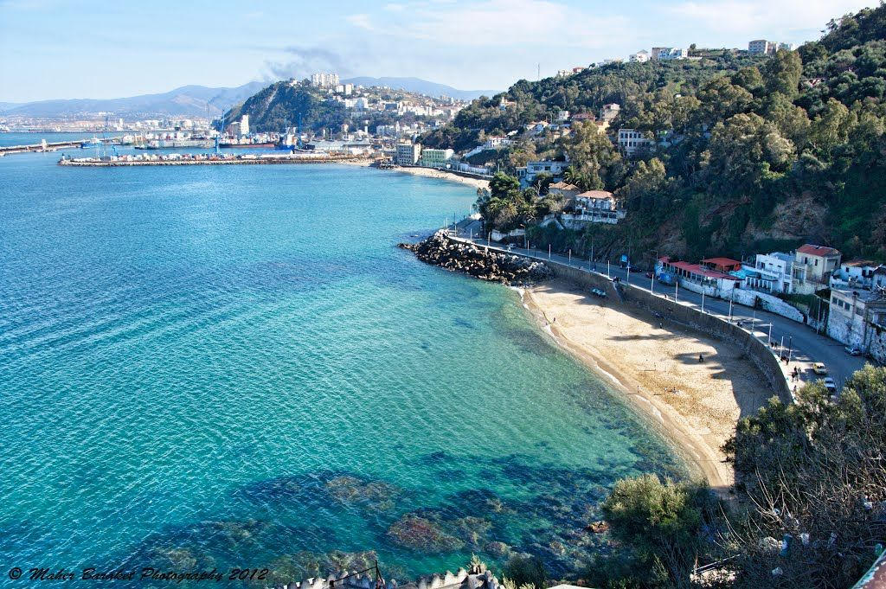
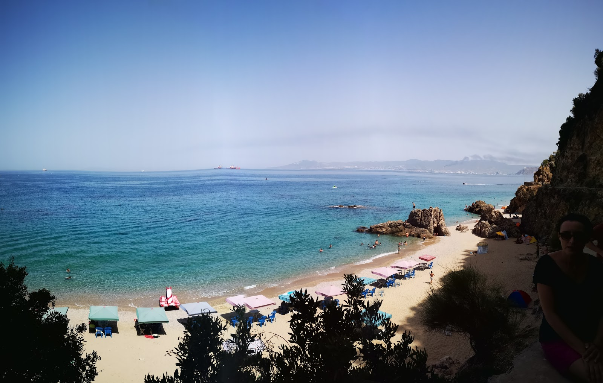
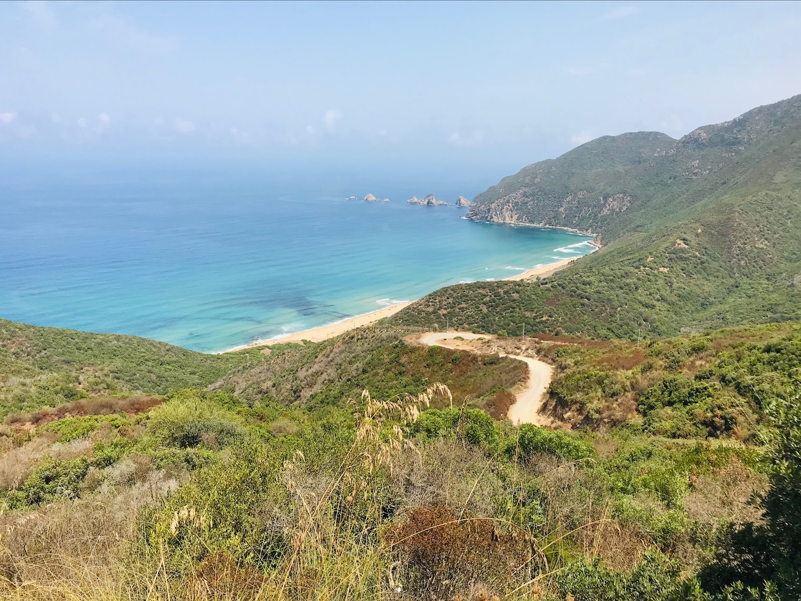

Les plages de Skikda, situées sur la côte nord-est de l'Algérie, offrent un cadre idyllique pour les amateurs de sable fin et d'eaux cristallines. Avec leur beauté naturelle préservée, ces plages constituent un havre de paix pour les visiteurs en quête de détente et de dépaysement.
Les paysages variés, allant des criques secrètes aux étendues de sable doré, ravissent les yeux et offrent une expérience unique à chaque coin de rivage. Skikda se distingue par son atmosphère accueillante et la richesse de ses paysages marins, faisant de ses plages une destination incontournable pour les amoureux de la mer et de la nature.
Voici une petite liste de plages a visiter a Skikda :
Les plages de la corniche de Stora
Les plages de la corniche de Skikda sont pour la plupart de petites plages situées a dix minutes du centre ville, et s'étendent sur une cote d'environ 5Km.
C'est l'une des plages les plus populaires de Skikda, connue pour ses eaux claires et ses installations touristiques. Le port de Stora, à proximité, ajoute du charme au lieu avec ses bateaux de pêche.


Plage de Larbi Ben M'hidi Jeanne D'Arc
Emplacement : Près du centre-ville de Skikda, à l'ouest du port.
Cette plage urbaine est facilement accessible et très fréquentée par les habitants et les visiteurs. Elle offre diverses installations et est idéale pour les familles.
Toute la côte de Larbi Ben Mhidi Jeanne D'Arc est accessible à tous. C'est une plage équipée, la liste de ses infrastructures comprend :
Chaises longues
Parasols
Cafés-bar
Douches, WC et vestiaires
Locations de sports aquatiques
Il y a un parc aquatique pour les enfants sur l'eau. Un sauveteur est en service à la plage pendant la saison estivale.
En plus de la baignade et des séances de bronzage, vous pouvez également participer à d'autres activités. Il est certain que cette plage convient aux amateurs de kite et de planche à voile.
L'accès à la plage est pratique, la distance de la route est de moins de 500 mètres. Un parking est situé à proximité immédiate.
La grande plage
Grande Plage est une plage a un aspect sauvage, elle est situé à 7.5 km du centre ville de Skikda.
Il s'agit d'un Ligne du bord sous la forme d'une baie de plusieurs kilomètres est recouvert d'eau turquoise et cristalline et sable clair, donc il n'y a pas besoin de chaussures spéciales. l'entrée dans l'eau a une netteté cristalline.
Cette plage convient à différentes catégories de personnes, voyageurs solitaires, amateurs de séjours détente et bien d'autres. Grand avantage, ce n'est pas un endroit bondé pendant la saison.
Plage Oued Tanji

Oued Tanji est plage paradisiaque completement sauvage, elle est située a 14 km du centre ville de Skikda.
La plage ne dispose d'aucune infrastructure ni commodité ou meme locations. Donc pour ceux qui veulent visiter, prévoyez tout le nécessaire pour passer une agréable journée.
Les plages de la wilaya de Skikda sont célèbres pour leurs paysages paradisiaques et diversifiés, allant des plages urbaines avec toutes les commodités nécessaires aux plages sauvages et isolées, parfaites pour une évasion tranquille. Que ce soit pour des activités aquatiques, des promenades ou simplement pour se détendre, les plages de Skikda offrent une expérience balnéaire riche et variée.
Pour plus d'informations et plus de plages a explorer, Veuillez Consulter ce lien :